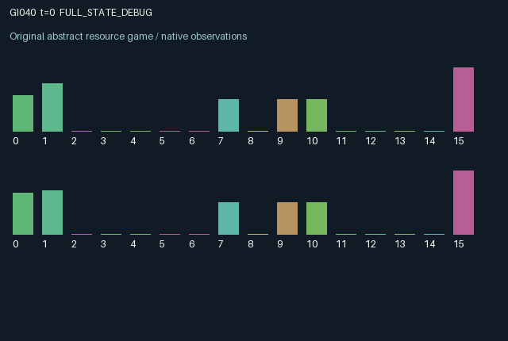

GI040 / LEGACY_ARRAY
astra-d2-00040: Escrowed handoffs with inspectable hidden quality
2 agents5 actions16 observation columns32 original horizonRuntime: PASS
Release verification episode
Untrained uniform legal actions. Actual JAX state sampled along the full original episode; full-state debug camera. No human performance or learning claim.

Run this game
crucibles play --game 40
Start Python locally, then open the address printed by the terminal. Installation, multiplayer, takeover and keyboard controls →
Objective, rewards & ending
Exact task contract
{
"objective": "Accumulate original per-agent rewards under the interaction rules in mechanism.md.",
"natural_termination": "No early terminal; original t >= 32 horizon.",
"exact_transition_and_reward_source": "def raw_step(self, key, state, actions):\n vacant = state[\"stage\"] == 0\n honest = (actions == 1) & vacant & (state[\"stock\"] >= state[\"cost\"] + 0.4)\n shortcut = (actions == 2) & vacant & (state[\"stock\"] >= 0.55)\n launch = honest | shortcut\n inspect = (actions == 3) & (jnp.roll(state[\"stage\"], 1) > 0) & (state[\"stock\"] >= 0.1)\n insure = (actions == 4) & (state[\"stock\"] >= 0.25) & (state[\"shield\"] < 1.4)\n checked = state[\"verified\"] | jnp.roll(inspect, 1)\n mature = state[\"stage\"] == 1\n good = state[\"quality\"] > 0.5\n detected = mature & (~good) & checked\n accepted = mature & (~detected)\n delivered_good = jnp.roll(mature & good, 1)\n delivered_bad = jnp.roll(mature & (~good) & (~checked), 1)\n delivered_rejected = jnp.roll(detected, 1)\n available_shield = jnp.minimum(1.5, state[\"shield\"] + 0.65 * insure.astype(jnp.float32))\n damage = 0.55 * delivered_bad.astype(jnp.float32)\n absorbed = jnp.minimum(available_shield, damage)\n receiver_loss = damage - absorbed\n production_cost = honest.astype(jnp.float32) * state[\"cost\"] + 0.15 * shortcut.astype(jnp.float32)\n stock = jnp.clip(\n state[\"stock\"]\n + 0.55 * (actions == 0).astype(jnp.float32)\n - production_cost\n - 0.4 * launch.astype(jnp.float32)\n - 0.1 * inspect.astype(jnp.float32)\n - 0.25 * insure.astype(jnp.float32)\n + state[\"bond\"] * accepted.astype(jnp.float32)\n + 0.35 * accepted.astype(jnp.float32)\n + 0.6 * delivered_good.astype(jnp.float32)\n + 0.2 * delivered_rejected.astype(jnp.float32)\n - receiver_loss,\n 0.0,\n 6.0,\n )\n issuer_payoff = mature.astype(jnp.float32) * jnp.where(\n good,\n 0.45 + 0.2 * state[\"trust\"],\n jnp.where(checked, -0.65, 0.55 + 0.1 * state[\"trust\"]),\n )\n receiver_payoff = (\n 0.35 * delivered_good.astype(jnp.float32)\n + 0.08 * delivered_rejected.astype(jnp.float32)\n - receiver_loss\n )\n effort = (\n 0.12 * honest.astype(jnp.float32)\n + 0.035 * shortcut.astype(jnp.float32)\n + 0.035 * inspect.astype(jnp.float32)\n + 0.06 * insure.astype(jnp.float32)\n )\n rewards = jnp.clip(issuer_payoff + receiver_payoff - effort, -1.0, 1.0).astype(jnp.float32)\n continuing = state[\"stage\"] > 1\n next_state = {\n \"t\": state[\"t\"] + jnp.array(1, dtype=jnp.int32),\n \"stock\": stock.astype(jnp.float32),\n \"cost\": state[\"cost\"],\n \"stage\": jnp.where(launch, 3, jnp.maximum(state[\"stage\"] - 1, 0)).astype(jnp.int32),\n \"quality\": jnp.where(launch, honest.astype(jnp.float32), jnp.where(continuing, state[\"quality\"], 0.0)),\n \"bond\": jnp.where(launch, 0.4, jnp.where(continuing, state[\"bond\"], 0.0)).astype(jnp.float32),\n \"verified\": jnp.where(launch, False, continuing & checked),\n \"shield\": jnp.maximum(available_shield - absorbed - 0.08, 0.0).astype(jnp.float32),\n \"trust\": jnp.clip(\n state[\"trust\"]\n + 0.1 * (mature & good).astype(jnp.float32)\n + 0.03 * (mature & (~good) & (~checked)).astype(jnp.float32)\n - 0.3 * detected.astype(jnp.float32),\n 0.0,\n 1.0,\n ),\n \"last_payoff\": rewards,\n \"last_delivery\": receiver_payoff.astype(jnp.float32),\n \"shipped\": state[\"shipped\"] + launch.astype(jnp.float32),\n }\n done_all = next_state[\"t\"] >= 32\n dones = jnp.full((2,), done_all, dtype=jnp.bool_)\n info = {\"done_all\": done_all, \"legal_mask\": self.legal_actions(next_state)}\n return self.observe(next_state), next_state, rewards, dones, info"
}Declared per-step reward bounds: -1.0 to 1.0. Observability: source_defined.
Rules
Original mechanism document (historical status wording retained)
# astra-d2-00040: Escrowed handoffs with inspectable hidden quality This original source proposes a synthetic bilateral procurement mechanism. Each role operates one outgoing job slot and is the recipient of the other's jobs. Action 0 replenishes stock; 1 launches costly good work; 2 launches cheap defective work; 3 inspects the incoming job; 4 buys a decaying shield against defective deliveries. A launch escrows 0.4 stock and starts a countdown of 3. A job settles when its existing countdown equals 1, after three subsequent transitions. Inspection marks the other role's outstanding job and exposes its quality. At settlement, inspected defective work loses its bond, lowers public trust and produces a negative issuer payoff; uninspected defective work earns a fee but damages the recipient. Good work delivers resources to the recipient and raises issuer trust. Trust changes later settlement payoffs. A recipient can instead buffer losses by accumulating a shield, which is consumed by damage and decays. Inspection on the settlement transition is effective. The role observes its own production cost, stock, job quality, escrow, outgoing countdown, incoming countdown, inspection result, shield, both trust values, previous payoff and delivery, dispatch count, clock and role label. The incoming quality remains represented by -0.5 until inspected. The other role's stock and production cost are private. Reset samples only initial stock and private costs from the supplied key; subsequent transitions are deterministic. Incentives combine an immediate effort/resource cost with delayed fees, transfers, reputation and damage. Both agents alter persistent state and the other's resources and payoffs through jobs, inspection and indemnity. The per-step reward is the clipped sum of issuer settlement and receiver delivery utility minus action effort; clipping to [-1,1] is an explicit utility saturation and is separate from stock transfers. Legal masks retain the stock-replenishment action and prevent unsupported launches, inspection and insurance. The familiar relation is procurement moral hazard with escrow, costly verification and insurance. The proposal is not a claim of a previously unknown game, arbitrary-program nonisomorphism, operational mechanism qualification or learning benefit. Its three-transition outstanding-job state, recipient-originated verification and trust-dependent settlement are the intended causal features for later review. The interface is 2 agents, 16 float32 observations per agent, 5 actions and a 32-step terminal clock. Terminal observations preserve the resulting state. No candidate execution, compilation or isolated validation was performed by the author. Initial parent, preceding-source and feedback provenance are absent, and generation used only the supplied train-context contract and code whitelist.
Commands
0Produce stock
1Make honest delivery
2Make shortcut delivery
3Inspect partner delivery
4Buy insurance shield
Roles & abilities
agent_0 Original legacy agent; see mechanism and source
agent_1 Original legacy agent; see mechanism and source
Observation permissions
Training receives only the original observation rows. Role cameras use declared visibility; debug cameras are explicitly marked. Local benchmark records log debug exposure and role takeover history.
Exact observation layout
[
{
"slice": [
0,
16
],
"visibility": "exact original observe() below",
"source_code": "def observe(self, state):\n incoming_stage = jnp.roll(state[\"stage\"], 1)\n incoming_verified = jnp.roll(state[\"verified\"], 1)\n incoming_quality = jnp.roll(state[\"quality\"], 1)\n reported_quality = jnp.where(incoming_verified, incoming_quality, -0.5)\n obs = jnp.zeros((2, 16), dtype=jnp.float32)\n obs = obs.at[:, 0].set(state[\"stock\"] / 6.0)\n obs = obs.at[:, 1].set(state[\"cost\"] / 1.1)\n obs = obs.at[:, 2].set(state[\"stage\"] / 3.0)\n obs = obs.at[:, 3].set(state[\"quality\"])\n obs = obs.at[:, 4].set(state[\"bond\"] / 0.4)\n obs = obs.at[:, 5].set(incoming_stage / 3.0)\n obs = obs.at[:, 6].set(incoming_verified.astype(jnp.float32))\n obs = obs.at[:, 7].set(reported_quality)\n obs = obs.at[:, 8].set(state[\"shield\"] / 1.5)\n obs = obs.at[:, 9].set(state[\"trust\"])\n obs = obs.at[:, 10].set(jnp.roll(state[\"trust\"], 1))\n obs = obs.at[:, 11].set(state[\"last_payoff\"])\n obs = obs.at[:, 12].set(state[\"last_delivery\"])\n obs = obs.at[:, 13].set(state[\"shipped\"] / 16.0)\n obs = obs.at[:, 14].set(state[\"t\"] / 32.0)\n obs = obs.at[:, 15].set(jnp.array([-1.0, 1.0], dtype=jnp.float32))\n return obs"
}
]Entity visibility & attributes
[]
Actual verification & provenance
Per-game execution receipt
{
"game": "gi040",
"status": "PASS",
"verification_revision": 2,
"source_sha256": "db480092affd75e06bc74fabaa67ec28bcca1d670f28db8cac01c7eda7d02944",
"seed": 20261101,
"runtime": {
"jax": "0.4.38",
"numpy": "1.26.4",
"devices": [
"TFRT_CPU_0"
]
},
"dimensions": {
"num_agents": 2,
"observation_size": 16,
"num_actions": 5,
"max_steps": 32
},
"checks": {
"eager_reset": {
"status": "PASS",
"seconds": 0.8397941589355469
},
"observation_spaces_legal_masks": {
"status": "PASS",
"seconds": 0.316378116607666
},
"eager_step": {
"status": "PASS",
"seconds": 0.8885040283203125
},
"jit_reset": {
"status": "PASS",
"seconds": 0.7149317264556885
},
"jit_step": {
"status": "PASS",
"seconds": 0.5970866680145264
},
"eager_jit_integer_parity_float_measurement": {
"status": "PASS",
"seconds": 0.0009999275207519531
},
"jit_vmap_reset": {
"status": "PASS",
"seconds": 0.478346586227417
},
"jit_vmap_step": {
"status": "PASS",
"seconds": 0.40801334381103516
},
"outer_autoreset_api": {
"status": "PASS",
"seconds": 0.9083795547485352
},
"full_original_horizon_episode_and_render": {
"status": "PASS",
"seconds": 1.1609649658203125
}
},
"human_scores": null,
"browser_controls": "PENDING",
"failures": [],
"elapsed_seconds": 6.820500612258911,
"float_parity_max_abs": 5.960464477539063e-08,
"numerical_parity": "UNDETERMINED_NONZERO_FLOAT_DIFFERENCE",
"raw_terminal_absorbing": "NOT_PART_OF_ORIGINAL_LEGACY_CONTRACT",
"terminal_outer_reset": "PASS",
"episode_steps": 32,
"scripted_random_returns": [
-1.2999999448657036,
-1.1999999843537807
],
"terminal": true,
"demo_information": "FULL_STATE_DEBUG",
"demo_frames": 33,
"render_roles_checked": 2
}Chromium control verification
{
"game": "gi040",
"status": "PASS",
"human_scores": null,
"engineering": true,
"checks": [
"catalog_selected_and_real_native_reset",
"dom_queue_and_native_step",
"second_participant_ownership_and_native_joint_step",
"all_roles_individually_controllable_no_role_cap",
"explicit_debug_camera",
"release_to_pure_ai_without_reset",
"close_session_preserves_log"
],
"ui_sha256": "96243f9de144b80b5e20a114330e2206bdcd58d3efc9c6f13bbc08b95cacc14d",
"keyboard": "NO_LEGAL_CARDINAL_COMMAND_FOR_ROLE0_AT_RESET",
"seconds": 4.028221368789673
}Original identity and file hashes
{
"id": 40,
"key": "gi040",
"title": "astra-d2-00040: Escrowed handoffs with inspectable hidden quality",
"summary": "",
"tags": [],
"family": "legacy_array",
"dimensions": {
"num_agents": 2,
"observation_size": 16,
"num_actions": 5,
"max_steps": 32
},
"source_sha256": "db480092affd75e06bc74fabaa67ec28bcca1d670f28db8cac01c7eda7d02944",
"manifest_sha256": "9c452db168262273c18a784647e1f8d057e51e2510a64b948c72023295939b7f",
"files": [
{
"file": "candidate.py",
"sha256": "db480092affd75e06bc74fabaa67ec28bcca1d670f28db8cac01c7eda7d02944",
"bytes": 6760,
"origin": "work/exp_2/astra_generation/discovery_v2/initial/candidate_00040/attempt_00/candidate.py"
},
{
"file": "mechanism.md",
"sha256": "edc5f9205f2909333fa624fb8b4bca4d8d6fa9a2ca2a8ac2a032f1bf8eaa07aa",
"bytes": 2867,
"origin": "work/exp_2/astra_generation/discovery_v2/initial/candidate_00040/attempt_00/mechanism.md"
}
],
"original_status": "LEGACY_SOURCE",
"original_saved_replay": false,
"release_validation": "PASS",
"human_scores": null,
"browser_validation": "PASS"
}